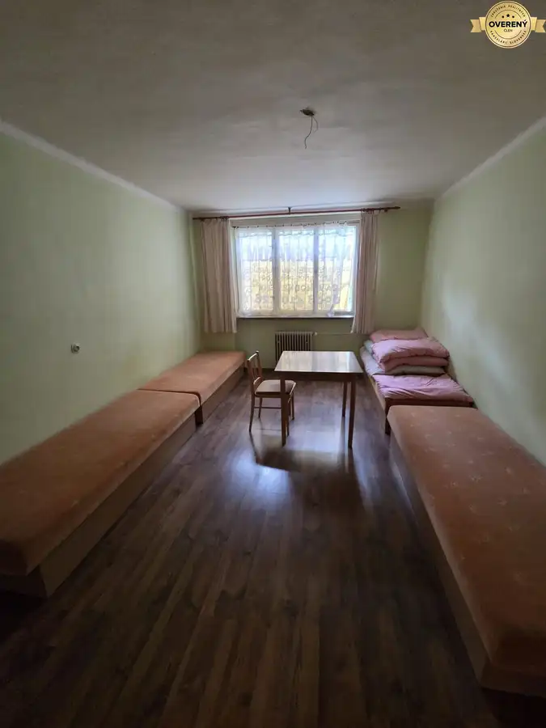
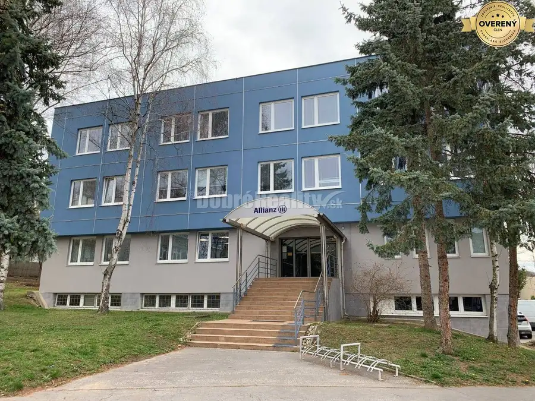
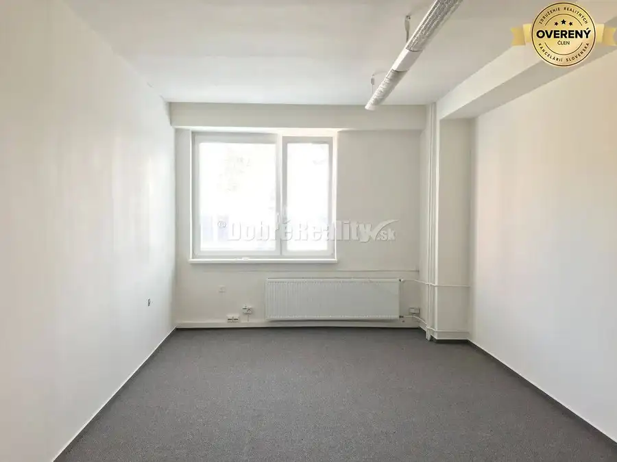
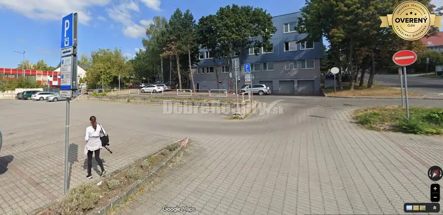
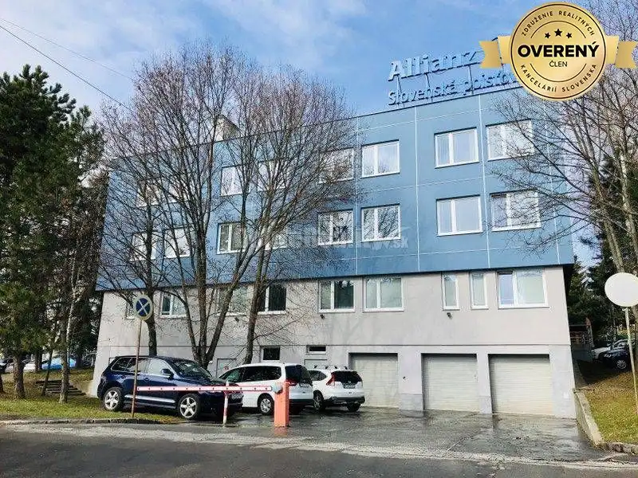
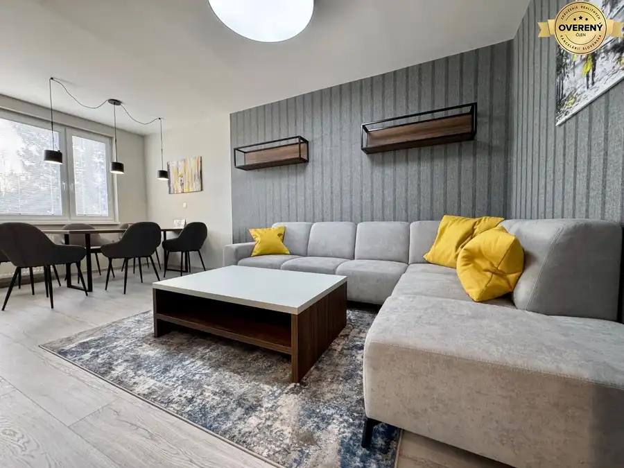
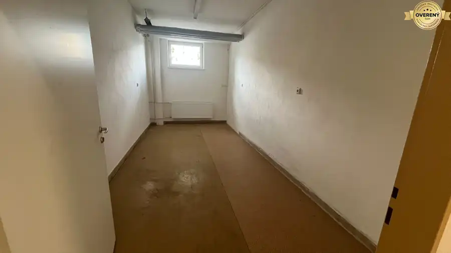
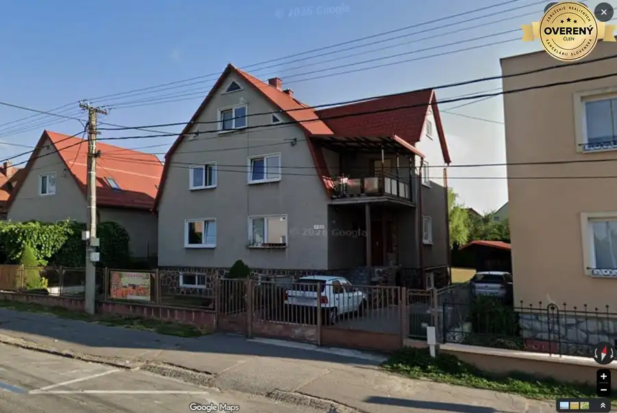

Aktuálna ponuka
Nehnuteľnosti, ktoré ponúkam
9 nehnuteľností na predaj a prenájom. Vyberte typ, alebo napíšte lokalitu.
9 z 9 ponúk

Domy a budovy6 Cena dohodouUbytovanie pre firmy – kapacita 6 osôb - Handlová Handlová 6-izbový25 m² Priestor sa prenajíma v celosti, čo poskytuje dostatok súkromia a pohodlia pre ubytovaných zamestnancov. K dispozícii: kapacita 6 osôb spoločná…
Nebytové priestory8 Cena dohodouDOBRÉ REALITY - Priestory a kancelárie na prenájom, 15,20,30,50m2 Prievidza 20 m²4. podlažie Ponúkame Vám na prenájom kancelárske a prevádzkové priestory v polyfunkčnej budove na Záhradníckej ulici v Prievidzi. Budova sa nachádza v centrálnej…
Nebytové priestory9 Cena dohodouDOBRÉ REALITY - Výhodný priestor na prenájom, 15 m2 Prievidza 15 m²1. podlažie Ponúkame Vám na prenájom kancelárske a prevádzkové priestory v polyfunkčnej budove na Záhradníckej ulici v Prievidzi. Budova sa nachádza v centrálnej…
Nebytové priestory9 Cena dohodouDOBRÉ REALITY - Prenájom priestorov, 30m2, budova Allianz, Záhradnícka Prievidza 30 m²1. podlažie Ponúkame Vám na prenájom kancelárske a prevádzkové priestory v budove Allianz na Záhradníckej ulici v Prievidzi. Budova sa nachádza v centrálnej…
Nebytové priestory9 Cena dohodouDOBRÉ REALITY - Virtuálne / registrové sídlo spoločnosti Prievidza 30 m²2. podlažie Ponúkame Vám na virtuálne / registrové sídlo v administratívnej budove Allianz, na Záhradníckej ulici v Prievidzi. Budova sa nachádza v centrálnej…
Byt10 Cena dohodouKompletne zrekonštruovaný 4-izbový byt na prenájom v Prievidzi Prievidza 4-izbový84 m²1. podlažie Hľadáte priestranný a moderný byt na dlhodobý prenájom? Ponúkame Vám moderný 4-izbový byt v Prievidzi na ulici V. Clementisa, ktorý prešiel…
Nebytové priestory3 Cena dohodouDOBRÉ REALITY - Prenájom skladový priestor 17,5 m² – Záhradnícka, PD Prievidza 17.5 m² Ponúkame na prenájom bezbariérový skladový priestor s výmerou 17,5 m², ktorý sa nachádza v administratívnej budove Allianz na Záhradníckej ulici v…
Byt Cena dohodouDOBRÉ REALITY - Výhodné dlhodobé ubytovanie v Bojniciach Bojnice 1-izbový20 m²1. podlažie Ponúkame na prenájom izby ako výhodné dlhodobé ubytovanie v Bojniciach na Prievidzskej ulici. Ubytovanie pozostáva zo samostatných izieb v rodinnom… Byt Cena dohodouDOBRÉ REALITY - Výhodné dlhodobé ubytovanie v Bojniciach Prievidza 1-izbový20 m²1. podlažie Ponúkame na prenájom izby ako výhodné dlhodobé ubytovanie v Bojniciach na Prievidzskej ulici. Ubytovanie pozostáva zo samostatných izieb v rodinnom…Tomuto výberu zatiaľ nezodpovedá žiadna ponuka. Napíšte mi, čo hľadáte.